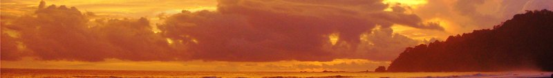
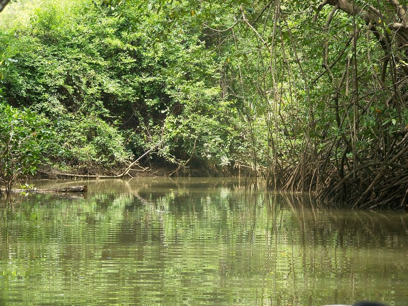
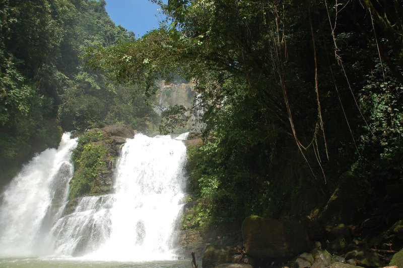

TRIP OVERVIEW
Day 1 – Manuel Antonio National Park
Day 2 – Quepos · Isla Damas
Day 3 – Nauyaca Waterfalls
Day 1
🏨 From Hotel: 🚶 8 min · 🚕 2 min → Manuel Antonio National Park
1. Manuel Antonio National Park
↳ The smallest national park in Costa Rica holds one of the highest concentrations of biodiversity on earth. Four ecosystems — tropical rainforest, mangrove, beach, and coral reef — share 1,983 hectares. The main trail leads through dense canopy to Playa Manuel Antonio, a white-sand beach backed by forest. Punta Catedral connects two beaches via a forested ridge walk with Pacific views. Wildlife along the main trail includes white-faced capuchin monkeys, two-toed sloths, scarlet macaws, and the endangered Central American squirrel monkey. Arrive at opening for peak wildlife activity.
🏛️ Wednesday - Monday 7:00am - 4:00pm
🚫 Closed Tuesday
⏰ ~4 hrs
⚠️ Book tickets at sinac.go.cr before arriving — the daily cap of 2500 visitors sells out weeks ahead. Last entry is at 3:30pm.
🕐 7:00am · ⏳ 2 hrs · 👥 Small group
🚶 8 min · 🚕 2 min

🚕 2 min → hotel
Day 2
🏨 From Hotel: 🚕 14 min → Quepos
1. Quepos
↳ The working port town 3.5 km north of Manuel Antonio, built on a banana and tuna industry before tourism reshaped the economy. The downtown grid is compact and walkable: a covered market, hardware shops, and sodas serving gallo pinto and casado line the main streets. The seafront Paseo and Parque Central are the social anchors. Unlike the resort strip, Quepos moves at a local pace — worth an hour's walk for context on the region beyond the tourist corridor.

🚕 8 min
2. Isla Damas
↳ A mangrove island in the Damas Estuary, reached by guided boat through tidal channels fringed by red and black mangroves. Guides navigate by motorboat into the channel network, where American crocodiles rest on mudbanks, white ibis pick through shallows, green iguanas drape overhead branches, and night herons roost in the canopy. The channels narrow toward the island interior as the forest closes overhead. Departure times shift with the tide cycle; the tour runs best at mid-to-high tide when the deepest sections are navigable.
⏳ 4 hrs
⚠️ Departure times shift with the tide schedule. Confirm your exact departure with the tour operator after booking — the window varies daily by up to 3 hours.

🚕 22 min → hotel
Day 3
🏨 From Hotel: 🚕 55 min → Don Lulo's Nauyaca
1. Nauyaca Waterfalls
↳ Two-tiered waterfalls on the Río Nauyaca, accessed from Don Lulo's private land near Dominical. The upper falls drop 45 meters into a wide swimming pool; a lower cascade sits 200 meters downstream. Access is by horseback or truck shuttle — both depart from Don Lulo's entry point and cover 7 km of dirt track into the mountains. The truck option takes 45 minutes each way; horses take 90 minutes but move through closer jungle. At the falls, flat rocks beside the pool provide a natural rest area. The pool is deep enough to swim under the waterfall and clear enough to see the bottom. Arrive by 9:00am to have full time at the falls.
🏛️ Daily 7:00am - 2:00pm
⏰ ~5 hrs
⚠️ The access point closes at 2:00pm. Arrive by 9:00am. Bring water shoes — the trail has shallow river crossings on slippery stones.

🚕 55 min → hotel
Manuel Antonio National Park · Closed Tuesday
Viator
📅 1. Manuel Antonio Park Nature Guided Tour with a Nature Specialist · 4.80⭐ · 4373+ reviews — Viator
↳ Half-day walk through the national park led by a certified naturalist with a professional spotting scope. Covers the main canopy path and Playa Manuel Antonio. Wildlife spotting includes sloths, white-faced capuchins, scarlet macaws, toucans, and iguanas.
🕐 7:00am · ⏳ 4 hrs · 👥 Small group
🚶 8 min · 🚕 2 min
↳ Group walking tour combining wildlife spotting in the forest canopy with time on the main park beach. Naturalist guide identifies animals and explains the park ecology. Compact format suited to visitors who want an oriented introduction before exploring independently.
🕐 7:00am · ⏳ 2 hrs · 👥 Small group
🚶 8 min · 🚕 2 min
↳ Eco-tour through primary and secondary forest with a naturalist guide. Optional entrance ticket included in the booking. Covers the main trail system, Punta Catedral overlook, and coastal sections.
🕐 7:00am · ⏳ 2 hrs · 👥 Small group
🚶 8 min · 🚕 2 min
↳ Expert-led nature walk with a certified naturalist and high-powered spotting scope. Focus on biodiversity — primates, reptiles, birds. One of the most highly rated guides in Manuel Antonio. Commentary covers Costa Rica's conservation model and the park's founding history.
🕐 7:00am · ⏳ 2 hrs 30 min · 👥 Small group
🚶 8 min · 🚕 2 min
↳ Nature walk through the forest and coastal trail with a bilingual naturalist. Optional entrance ticket available at booking. Covers the primary wildlife zones and beach access points.
🕐 7:00am · ⏳ 2 hrs 30 min · 👥 Small group
🚶 8 min · 🚕 2 min
GetYourGuide
📅 1. Manuel Antonio National Park Guided Tour with Entrance Included · 4.8⭐ · 914+ reviews — GetYourGuide
↳ Guided walk with park entrance ticket included. English-speaking naturalist leads a small group through the main trail and coastal section with a spotting scope for sloths, capuchins, and tropical birds. Beach access at tour end.
🕐 7:00am · ⏳ 3 hrs · 👥 Small group
🚶 8 min · 🚕 2 min
📅 2. Manuel Antonio National Park Guided Tour + Ticket Guaranteed · 4.8⭐ · 483+ reviews — GetYourGuide
↳ Guaranteed-ticket guided tour that pre-purchases park entry with the booking. Eliminates the risk of the park selling out. Certified naturalist leads the main trail and beach section; group size kept small for closer animal sightings.
🕐 7:00am · ⏳ 2 hrs · 👥 Small group
🚶 8 min · 🚕 2 min
TripAdvisor
↳ Guided park walk with naturalist commentary and spotting scope. Small group format. 97% of reviewers recommend the experience. Particularly well-reviewed for the guide's patience with wildlife photography.
🕐 7:00am · ⏳ 3 hrs · 👥 Small group
🚶 8 min · 🚕 2 min
No distinctive coffee culture in Manuel Antonio.
El Patio de Café Milagro · 4.4⭐ · Manuel Antonio
↳ Award-winning Pan-Latin fusion with standout ceviche, fresh corvina, and inventive cocktails. One of the most consistently reviewed restaurants in the area.
🏛️ Monday - Saturday 7:00am - 9:30pm
🚶 5 min · 🚕 2 min
Café Agua Azul · 4.3⭐ · Manuel Antonio
↳ Open-air restaurant with views over the forest canopy to the Pacific. Fresh fish, rice and beans, and fruit smoothies. Arrive before sunset for the best light.
🏛️ Thursday - Tuesday 7:00am - 9:00pm
🚫 Closed Wednesday
🚶 12 min · 🚕 3 min
Kapi Kapi · 4.4⭐ · Manuel Antonio
↳ Elegant open-air dining with grilled meats, fresh fish, and contemporary Costa Rican dishes. Extensive cocktail list and one of the more refined settings along the Costanera corridor.
🏛️ Tuesday - Sunday 6:00pm - 10:00pm
🚫 Closed Monday
🚶 8 min · 🚕 2 min
El Lagarto · 4.4⭐ · Manuel Antonio
↳ Open-fire grill with a menu of grilled meats, whole fish, and Costa Rican classics. The outdoor terrace at sunset has strong views over the Quepos corridor.
🏛️ Daily 5:30pm - 10:30pm
🚶 15 min · 🚕 4 min
Ronny's Place · 4.2⭐ · Manuel Antonio
↳ Casual Costa Rican restaurant overlooking the forest valley. Consistent reviews for gallo pinto, fresh fish, and large fruit shakes. Frequented by locals and long-term visitors.
🏛️ Daily 7:00am - 11:00pm
🚶 18 min · 🚕 5 min
No historic downtown in Manuel Antonio.
Gallo Pinto
↳ Black beans and rice fried together, Costa Rica's national breakfast. Served with scrambled eggs, fried sweet plantains, and natilla. Found at every soda in Quepos and Manuel Antonio from early morning.
Casado
↳ The standard Costa Rican lunch plate: rice, black beans, salad, and a protein — corvina, chicken, or pork — with fried sweet plantains on the side. Order by name at any soda for an affordable full meal.
Ceviche Tico
↳ Costa Rican ceviche uses corvina marinated in lime juice with onion, cilantro, and a touch of Worcestershire sauce — distinct from the Peruvian style. Served with crackers at casual beachside sodas near the park entrance.
Pipa Fría
↳ Young coconut water sold ice-cold from roadside carts near the park entrance and along the main road. Vendors crack the coconut on site; the soft flesh is eaten with a spoon after finishing the water.
No food delivery services in Manuel Antonio.
No exceptional shows, performances, or concerts in Manuel Antonio.
🚕 Ride Apps
Red SETENA-licensed taxis — metered within Quepos; fixed rates apply on the Costanera Sur road between Quepos and Manuel Antonio. Agree on the fare before departure. Available at the Quepos taxi stand and by phone dispatch. Interbus and Grayline shuttles connect Manuel Antonio with San José and other Costa Rica destinations — book at least 24 hours in advance.
🚌 No tram in Manuel Antonio.
No train stations near the hotel. Costa Rica has no passenger rail service. Intercity travel uses long-distance buses from the Quepos bus terminal.
No day trips by train from Manuel Antonio. Costa Rica has no passenger rail service.
Costa Rica is not covered by the Michelin Guide.
🐒 The Squirrel Monkey's Second Chance
↳ The Central American squirrel monkey — called mono tití locally — is one of the rarest primates in the world. Its entire remaining population lives in two isolated pockets of Costa Rica: Manuel Antonio National Park and the Osa Peninsula. At the time the park was created in 1972, the species had been pushed to the edge of local extinction by cattle ranching and deforestation that had cleared most of the Pacific lowland forest. A mono tití troop moves fast and loud — 20 to 75 individuals traveling through the canopy at once, maintaining contact with high-pitched chirps. They are most active along the park's main trail in the first two hours after opening. The park's creation was contested and did not happen cleanly; a small community was displaced from within what became the park boundary, a fact that still surfaces in Costa Rican conservation discussions. The result — one of the most biodiverse patches of protected land per square kilometer on earth — reflects a tradeoff that is genuinely contested.